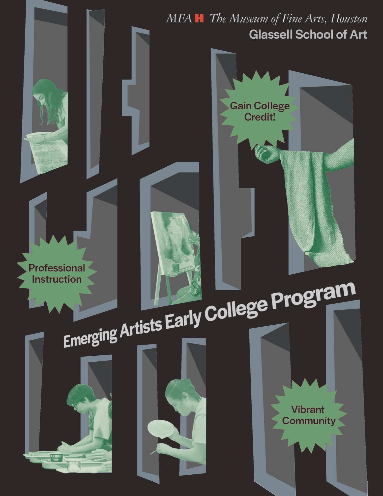
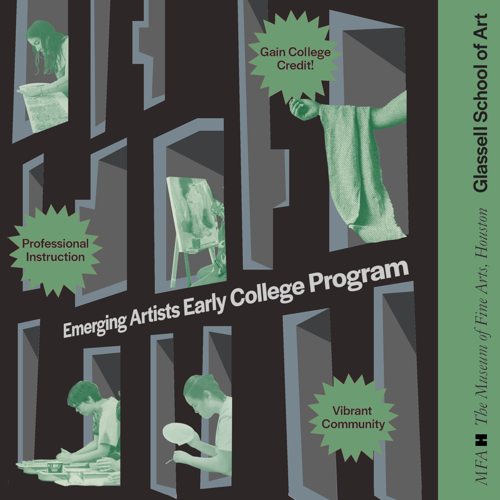
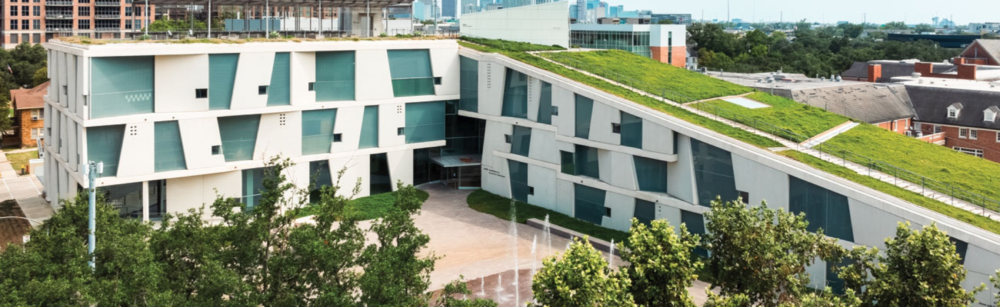

Museum of Fine Arts Houston — Poster Design, Marketing
Software used: Adobe Illustrator, Adobe Photoshop, Instagram
This poster and post I made was for the Museum of Fine Arts Houston newly founded, and first-ever in Texas Pre-College Arts program which would be hosted over the summer in the Glassell School of Art.

Post Version

Inspiration

This is the Glassell School of Art where I used the geometry of the windows in my poster to show the variety of opportunities available in the program.